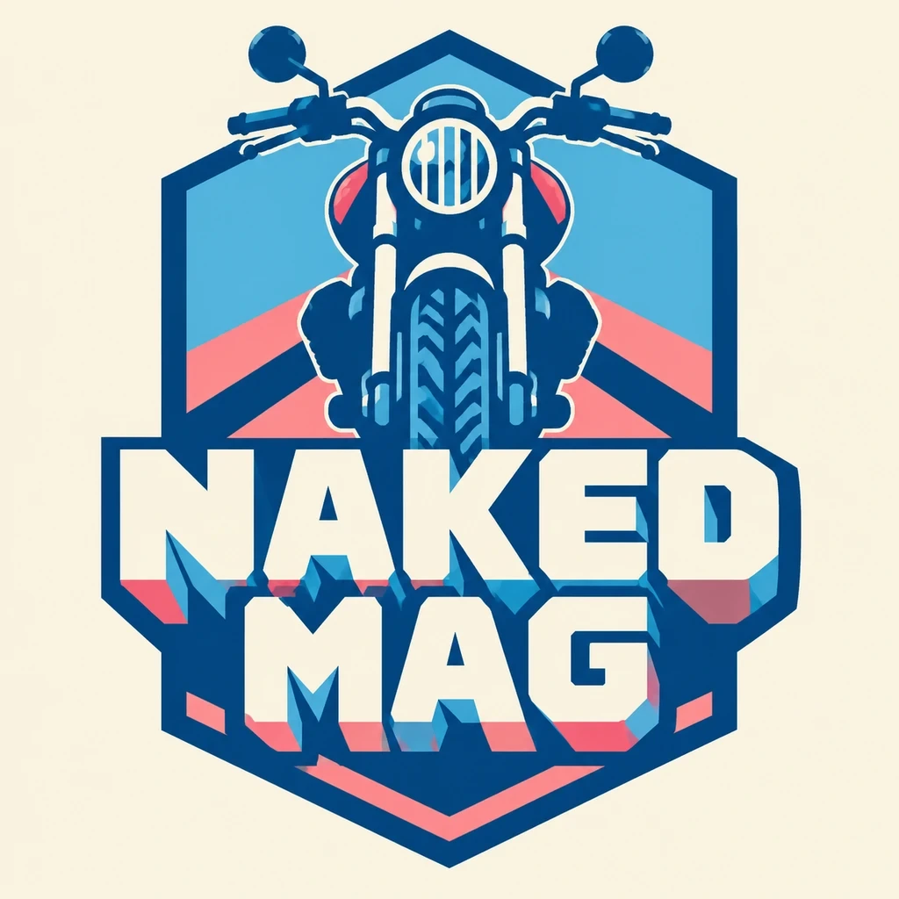
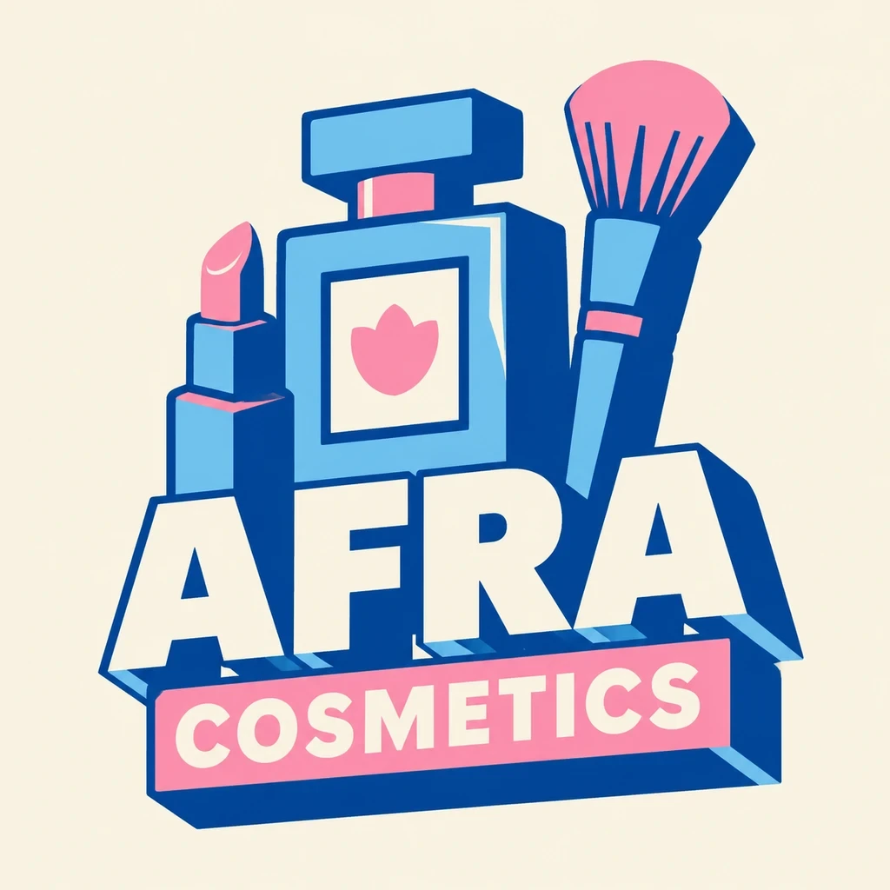
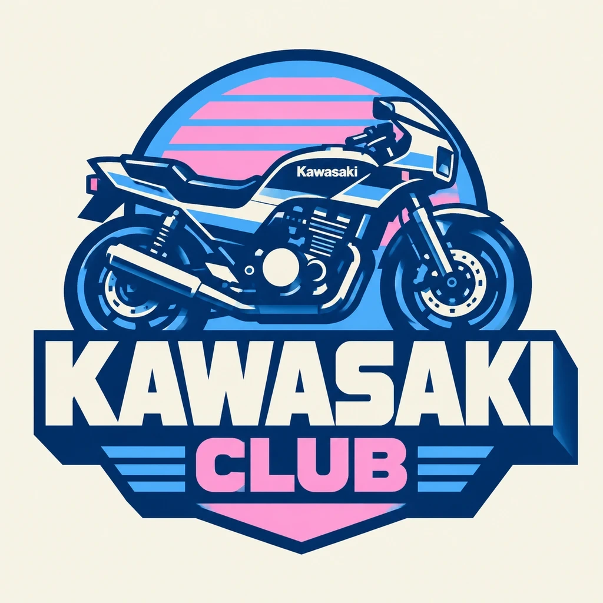

طراحی رابط کاربری
وبمجله تخصصی نیکد مگ
طراحی و توسعه تم تاریک، ساختار گرید و مدیریت محتوای چندرسانهای برای پلتفرم ژورنالیستی مستقل در حوزه موتورسیکلت.
تلاقی تفکر ساختاریافته سیاستگذاری اجتماعی در دانشگاه تهران با هنر مهندسی فرانتاند؛ توسعه محصولاتی تعاملی، بهینه، چشمنواز و متکی بر پایداری فنی.
مشاهده بخشی از نمونه کارها
طراحی و توسعه تم تاریک، ساختار گرید و مدیریت محتوای چندرسانهای برای پلتفرم ژورنالیستی مستقل در حوزه موتورسیکلت.

پیادهسازی فرمهای ثبتنام و ورود با اعتبارسنجی دقیق دادهها، طراحی کاملاً واکنشگرا و تجربه کاربری روان.

پیادهسازی رابط کاربری واکنشگرا و فرمهای ساختاریافته برای احراز هویت و عضویت جامعه موتورسواران با رعایت استانداردهای دسترسیپذیری و تعامل پایدار.
پیادهسازی اصولی استانداردهای وب، تسلط بر چینشهای مدرن و واکنشگرا و توسعه کدهای بهینه با اولویت تجربه کاربر.
مسئولیت مدیریت، بارگذاری محتوا، اصلاح ساختار و پشتیبانی فنی پروژهها با رویکرد پایداری سیستم.